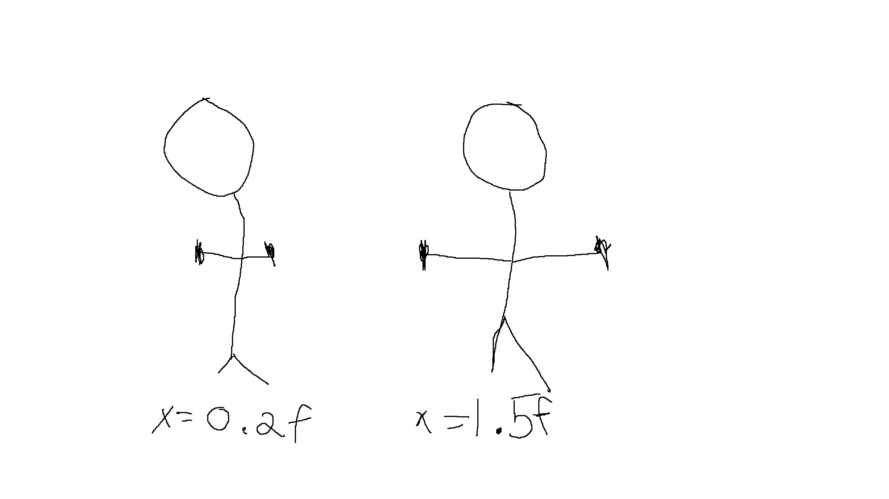
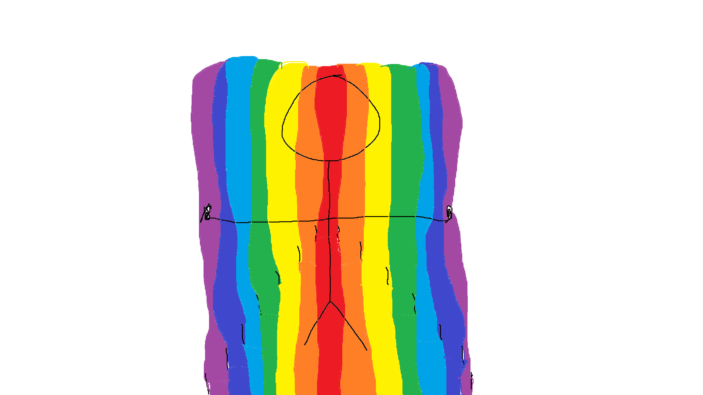

This program uses the joint-tracking of the xbox kinect to play a pure data patch within Unity. The program follows the players hands in the X and Y axis. The distance between the players hands in the X axis control the frequency of the melody while the distance in the Y axis control the frequency of the bass. The project was inspired by the theremin and other instruments controlled by movement rather than hitting a note or plucking a string. The goal was to create sounds based on the space we occupy.
Here is the pure data patch... it's a frankenstein of a bunch of tutorials since I didn't know how to use it before starting. I intially went in thinking I would send midi values to a DAW but that's not so easy in Unity. Luckily, pd is open-source and some lovely people created a library to send floats to a pure data patch! The music was based off a song called faucet by a band called nash to stoudemire. Kind of just something to zone out and meditate to. The pure data patch changes the melody every 4 notes and the bass is changed every 8.
These are a little code samples... This snippit you can see the right hand's x,y,z position are getting stored into an array. The data can be taken from the kinect through the body class' joints method that has the coordinates for each joint seen in the image at the top of the page.
This snippit is the main functionality of the program. We can calculate the magnitude, or distance, of the hands
by subtracting the x coordinate of the right from the x coordinate of the left and then taking the absolute value (I did the same thing for the y). The magnitude goes through some checks to see which
note should be sent. In this case the magnitude is between 0 and .2 .

When the player holds their hands close together, the magnitude will be ~0.2f and at full stretch it can get up to 1.5f. The same can be said for spreading your arms on the y axis.
That gave me about 7 even slots in the X and 7 in the Y where we can play notes. That might sound funny, but maybe the next picture will make more sense.

So for example if this player put both their hands in the yellow zone, they'd play an E with the frequency 329.6. Note that if the player had their left hand in the red and right in the purple, it would be the same as the plaer have both hands in the green! Also note that the same thing is done in the y for the bass. The notes are stored in two different arrays and are converted to floats and sent to the patch depending on the magnitude. The notes are based off a C major scale!!
The visuals were made using my analog video distorter along with my hi8 camcorder